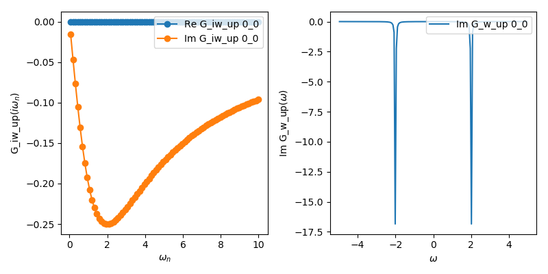

Single band Anderson impurity model
Here is the implementation for an Anderson impurity model with a flat (Wilson) hybridization function.
from triqs_hubbardI import *
from h5 import *
from triqs.gf import *
from triqs.operators import *
from triqs.utility.h5diff import h5diff
from h5 import HDFArchive
D, V, U = 1.0, 0.2, 4.0
e_f, beta = -U/2.0, 50
# initialize the solver
S = Solver(beta = beta, gf_struct = [ ('up',[0]), ('down',[0]) ],idelta=0.5)
# set the non-interacting Green's function
for name, g0 in S.G0_iw: g0 << inverse(iOmega_n - e_f - V**2 * Wilson(D))
# solve the atomic problem
S.solve( h_int = U * n('up',0) * n('down',0), calc_gw = True )
# Save the results in an HDF5 file (only on the master node)
with HDFArchive("aim_solution.h5",'w') as Results:
Results["G_iw"] = S.G_iw
Results["G_w"] = S.G_w
Take note of calc_gw = True in calling the solver, which also calculates the Green’s function on real frequencies.
Let us plot the result by
from triqs.gf import *
from h5 import *
from triqs.plot.mpl_interface import oplot
with HDFArchive('aim_solution.h5','r') as ar:
oplot(ar['G_iw']['up'], '-o', x_window = (0,10))
with HDFArchive('aim_solution.h5','r') as ar:
oplot(ar['G_w']['up'].imag, '-', x_window = (-5,5))
which should result in something like this:
The Green function is actually quite close to the cthyb result (compare the equivalent example in the documentation of the ctyhb app). The spectral function shows peaks at the atomic energies at plus and minus U/2.